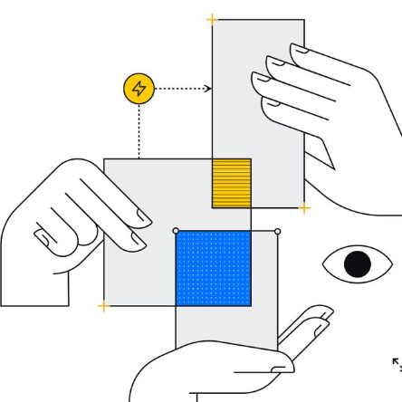

UX Design

Ett nytt äventyr har börjat
Nelson tycker om att utvecklas, därför ville han fortsätta med ett karriär inom programmering och design, tack vare vad han läste inom grafiska formgivning, Nelson vill nya utmaningar i sin arbetsliv. Efter tio års erfarenhet att jobba inom grafiska produktionen, projektledning och IT. Började han som UX design, vilken gör att skapa och hitta lösningar som alla behöver. Efter 4 månader för att hitta rätt väg till sin karriär, Nelson vill forsätta växa som ett trä som vill nå upp till himlen och önskar att kunna visa sina kunskaper och intresseer. Fortsättning följer....!